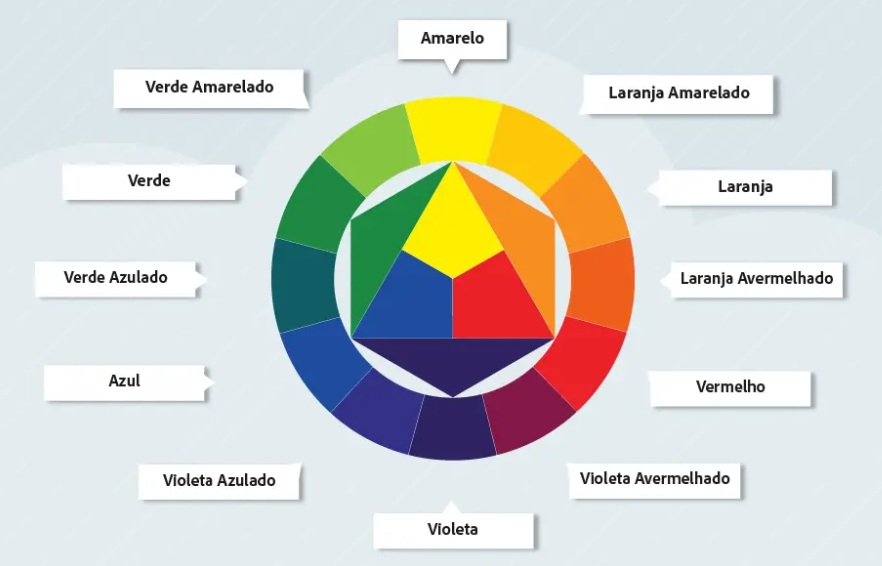

Módulo 2 - CSS
CORES
Cores são de suma importância na nossa vida, seja na hora de escolher uma blusa, um carro, a tinta que vamos pintar a nossa casa... E existe um estudo sobre isso:
A Psicologia das Cores é o estudo de como as cores afetam nossas emoções, comportamentos e decisões. Ela investiga como diferentes tons podem evocar sensações específicas (como calma, fome ou confiança) e como são usadas de forma estratégica no marketing, design, arquitetura e outras áreas para influenciar percepções e ações.
-
O significado das Cores (Associações Psicológicas)
Cada cor tende a provocar reações universais, embora haja variações culturais. Eis um guia geral:
- Vermelho:
- Emoções: Paixão, amor, excitação, energia, perigo, urgência.
- Uso Prático: Usado para chamar a atenção (liquidações, botões "compre agora"), estimular o apetite (McDonald's, KFC) e criar uma sensação de urgência.
- Azul:
- Emoções: Confiança, calma, segurança, seriedade, profissionalismo.
- Uso Prático: Muito comum em corporações (Facebook, LinkedIn, bancos) para transmitir confiabilidade. Também usado para criar sensação de paz e tranquilidade.
- Amarelo:
- Emoções: Otimismo, felicidade, criatividade, atenção, mas também pode representar ansiedade ou cautela.
- Uso Prático: Excelente para capturar a atenção e transmitir alegria (McDonald's, Nikon). Usado com moderação, pois em excesso pode causar inquietação.
- Verde:
- Emoções: Natureza, saúde, crescimento, dinheiro, frescor, harmonia.
- Uso Prático: Associado a produtos naturais, orgânicos, financeiros (caixas eletrônicos) e ambientais. Transmite uma sensação de equilíbrio.
- Laranja:
- Emoções: Entusiasmo, diversão, amigabilidade, confiança, acessibilidade.
- Uso Prático: Menos agressivo que o vermelho, é ótimo para chamar a ação (botões de inscrição, ofertas) e marcas que querem parecer energéticas e acessíveis (Fanta, Nickelodeon).
- Roxo:
- Emoções: Realeza, luxo, sabedoria, espiritualidade, criatividade.
- Uso Prático: Historicamente uma cor de nobreza, é usada para transmitir sofisticação e qualidade (Hallmark, Cadbury). Também associada à criatividade e misticismo.
- Preto:
- Emoções: Poder, elegância, sofisticação, mistério, luto.
- Uso Prático: Muito usado em marcas de luxo (Chanel, Mercedes-Benz) para transmitir exclusividade e autoridade.
- Branco:
- Emoções: Pureza, limpeza, simplicidade, paz, minimalismo.
- Uso Prático: Usado para criar espaços "limpos" e arejados, muito comum em marcas de tecnologia (Apple) e saúde para transmitir simplicidade e eficiência.
- Vermelho:
-
A Influência do Contexto e da Cultura
Este é um dos conceitos mais importantes: o significado de uma cor não é absoluto.
- Cultura: Enquanto o branco representa pureza e paz em muitas culturas ocidentais, é a cor do luto em partes da Ásia. O vermelho é a cor do perigo no Ocidente, mas da sorte e prosperidade na China.
- Contexto: Um vermelho em um botão de "Stop" significa perigo, mas no logotipo de um restaurante, significa fome e paixão.
-
Diferenças Individuais
Experiências pessoais também moldam nossa percepção das cores. Uma pessoa que teve uma experiência traumática com o mar pode não associar o azul à calma, por exemplo.
-
Combinações de Cores (Harmonia)
A psicologia não se aplica apenas a cores isoladas, mas também a como elas se combinam. Um layout com cores complementares (ex: azul e laranja) pode ser dinâmico e energético, enquanto uma paleta de cores análogas (ex: tons de azul e verde) pode ser calmante e harmoniosa.
-
Psicologia das Cores vs. Simbolismo das Cores
É importante fazer uma distinção:
- Psicologia das Cores: Estuda reações emocionais e inconscientes. (Ex.: O azul realmente acalma o sistema nervoso?)
- Simbolismo das Cores: Estuda os significados culturais e aprendidos. (Ex.: O branco é a cor da paz no Ocidente.)
Harmonia de Cores
As principais cores do círculo cromático são as 12 cores ditas na imagem acima.
- Cores primárias são:
- Amerelo
- Vermelho
- Azul
- Cores secundárias são:
- Laranja
- Violeta
- Verde
- Cores terciárias:
- São todas as cores entre uma cor primária e uma cor secundária. Exemplo: Amarelo-eseverdiado, amarelo-alaranjado.
Temperatura de Cores
Se dividirmos o círculo cromático ao meio, colocando de um lado, os tons de verde até a cor violeta, e do outro lado, o amarelo até a cor violeta-avermelhado, teremos então: do lado esquerdo, as cores frias, e do lado direito, as cores quentes.
DICA: Ao criarmos um site, devemos no máximo escolher uma palheta de 5 cores, com no minímo 3 cores. Se estamos criando um site para uma empresa que possui um logotipo já criado, então a dica é escolher uma palheta de cores que tenha a ver com as cores usada no logotipo da empresa.
Cores Complementares
Ao escolhermos uma cor, se quisermos verificar a cor que faz melhor contraste com a cor escolhida, devemos verificar a cor oposta no círculo cromático. Por exemplo: ao escolher a cor violeta, a cor complementar seria o amarelo. A cor complementar o vermelho, seria o verde.
Isso não quer dizer que a combinação dessas cores vai necessariamente ficar visualmente bonito, mas dá pra ajustar os tons das cores para que de encaixe melhor uma com a outra.
Cores Análogas
Se não quisermos usar cores que tenham um contraste muito grande, podemos escolher cores "irmãs", cores que tenham a ver uma com a outra. São as cores que não tem contraste, mas tem uma diferença perceptível, como os tons de violeta.
Isso não quer dizer que não poderemos usar as cores complementares, pois podemos, como nos exemplos abaixo:
3 tons de violeta + amarelo
3 tons de laranja + azul
Dá para perceber com os exemplos que, visualmente, fica até mais agradável de olhar.
Cores Análogas Relacionadas
Essa combinação de cores funciona da seguinte forma: ao invés de escolhermos 3 cores ou tons, podemos escolher duas cores vizinhas, pular uma cor, e escolher a próxima. Exemplo:
amarelo + laranja amarelado + laranja avermelhado
Aqui, podemos perceber que a palheta ainda fica mais agradável que os exemplos anteriores. Pois apesar das cores serem "irmãs", ainda assim existe um contraste bem visível e agradável.
Cores Intercaladas
Nessa combinação, podemos escolher uma cor de referência, pular uma cor, escolher outra, pular de novo, e escolher mais uma. Usando o exemplo partindo da cor amarela, ficaria assim:
amarelo + laranja + vermelho
Essa palheta já fica mais dura, o contraste fica muito forte, e vai do gosto e do estilo que estamos usando.
Cores Triádicas
As cores triádicas funcionam pulando 3 cores a partir da cor de referência. Exemplo:
amarelo + vermelho + azul
Cores em Quadrado
Nessa palheta, escolhemos 4 cores com intervalo de 2 cores entre si, formando um quadrado no círculo cromático. Exemplo:
amarelo + laranja avermelhado + violeta + verde azulado
Monocromia
Aqui, precisamos esolher apenas uma cor e trabalhar com ela, mudando algumas vezes, sua saturação e o brilho. Dessa forma, a palheta fica bem harmonica, homogenia e simétrica. Exemplo:
----- ----- ----- ----- -----
----- ----- ----- ----- -----
Ou seja, escolhemos uma cor e trabalhamos com outros tons da mesma cor.
Ferramentas
Para criar palhetas, podemos usar ferramentas que facilitam a compreensão de todos os tipos de harmonia de cores. Por exemplo, se o cliente te der uma cor que ele quer que esteja no projeto, você pode fazer a palheta de cores a partir dessa cor principal. Exemplos de ferramentas: